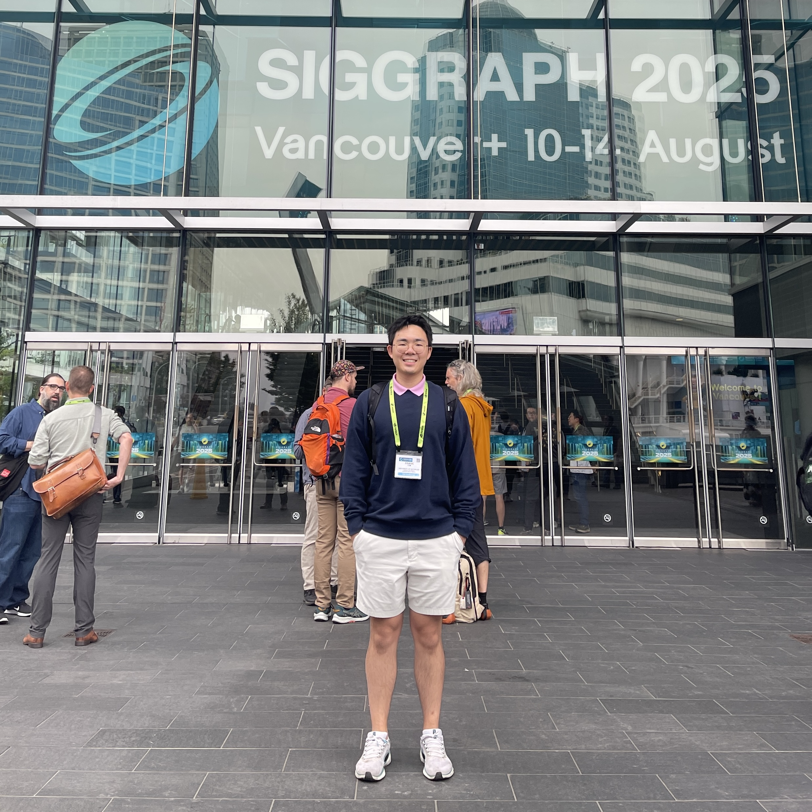

|
Frank Fan I'm a thesis-based Master's student at the University of Waterloo under the supervision of Prof. Gladimir Baranoski. I am also affiliated with the Natural Phenomena Simulation Group. Previously, I obtained my Bachelor of Computer Science also at the University of Waterloo. |
 |
{kind=link}
ResearchMy main research interests lie in computer graphics, light transport, and material appearance modelling. |
Technical ReportsA Study on Rendering Techniques to Visually Represent Sparkles Frank Fan, Gladimir V.G. Baranoski Technical Report CS-2024-02, D.R. Cheriton School of Computer Science, University of Waterloo, January 2024. |
Projects
|

Click thumbnail to play video
|
Concrete Jungle
The context behind Concrete Jungles is to showcase the diversity of each city in a minimalistic fashion. I wanted to find an avenue to portray the difference and personality of each city through only colours and data. The data involves the city's total population as of 2024, its density, and its area (found by dividing its population by its density). The colour palette of each city is chosen based on a variety of sources such as news articles, pinterest, online auto colour palette generators based on an inputted photo, and chatGPT. To further showcase the city's population quantity, I added entities above the city whose quantity is based on its population. Originally, they were intended to be cars travelling which follows their square nature. However, I gave them a skin tone colour to represent people as a whole. It's difficult to properly convey a city's culture, nuance, and environment without showing its history, architecture, people, and social and political climates. While it's easy to show the size of the city in the form of population, density, and area, a colour palette is a simple way to communicate a small piece of the city's story. Each colour palette is carefully selected based on the colours seen around the city. For example, New York contains the Statue of Liberty's green, the taxis' yellow, the brown of the buildings, and the blue of the Hudson River. |

Click thumbnail to play video
|
The American Dream
The American Dream begins with orange points seemingly randomly scattered across the canvas. Each frame is a different arrangement or configuration of these orange points. The configuration of these points is determined by the successful shot locations of all of the games played in a single day in the NBA. The dataset ranges from the year 2000 to 2022. Slowly, as time passes, some of these orange points become red, white, or blue stars, resembling the American flag. After some time, these stars all fall down and bounce around like basketballs while the orange dots begin to reappear. The cycle repeats. In the background are slightly blurred screenshots of various articles that discuss activism and politics within the NBA and its athletes. |

Click thumbnail to play video
|
A Dance in the Clouds
I retrieved the energies of the five frequency ranges — “bass,” “low mid,” “mid,” “high mid,” and “treble” — of Nuvole Bianche and chose to draw bezier curves according to the latter four. The bass frequency range was excluded due to its constant presence and high amplitude, leading to a lack of variety in bezier curve drawing. The low mid and mid energies dictated the “accompaniment bezier curve,” which was drawn in various shades of black. They represented the lower notes played by the left hand on the piano and acted as the complement to the melody and the white curves. The high mid and treble energies dictated the “melody bezier curve,” which is drawn in white, green, and pink. Ludicovo Enaudi's Nuvole Bianche is a piece that I hold dear to my heart. I discovered it in high school while studying for exams and ever since, I always come back to this song during stressful times. A Dance in the Clouds is a visual representation of my inner thoughts when listening to this song. It depicts a dance between Nuvole Bianche's melody and accompaniment and conceptualizes its ebb and flow onto the canvas. |